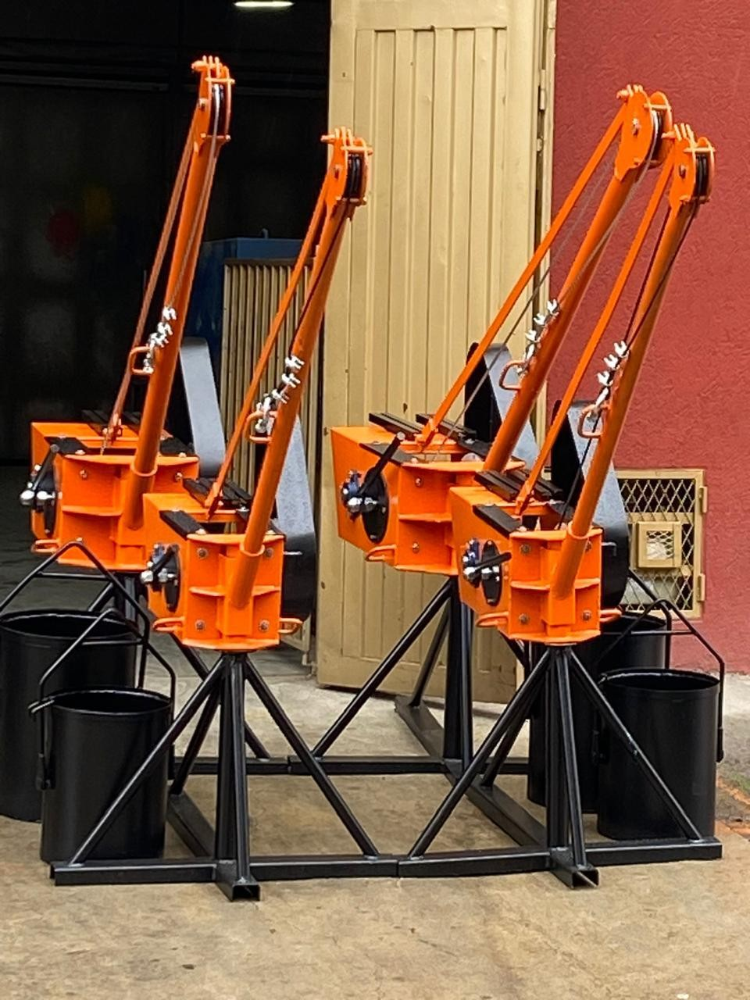
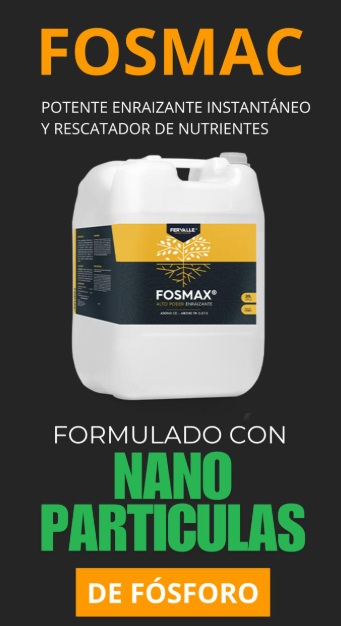

Estimular la síntesis de moléculas orgánicas

¡Impulsa tus cultivos desde la raíz!
Descubre nuestro Enraizante potente e instantáneo, con nanopartículas de fósforo que:
-Rescatan nutrientes del suelo
-Aumentan la productividad
-Reducen costos
-Protegen el medio ambiente
-Ofrecen una rápida asimilación, superando a los fertilizantes tradicionales